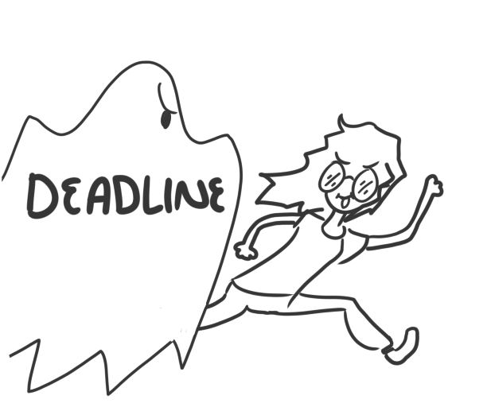

Coding
My experience as a programmer in game development
Programming, specifically Gameplay Programming is my main skill, although, because of my knowledge in 2D, 3D art and coding, I am also leaning into the Technical Artist area.

I used to love competitive programming using C++ and that gave me a very strong programming foundation, it made me able to speak to the computer in a fluent manner.
I mainly use Unity's C# to create games, but because I started with Phaser I'm also proficient in javascript. Currently, at VReality, we are developing a game with PlayCanvas, a cloud-based web-focused game engine which uses javascript language for scripting, the architecture is very similar to Unity except that, instead of using C#, it uses Javascript and because of that it's astoundingly flexible.
Gameplay Programming
Weird controllers and weird mechanics FTW!
VReality is a studio that creates all sorts of virtual experiences, mainly, for business that need advertising for their products, we have a lot of experience producing virtual experiences and games for players that come across our clients stands at fairs. And that's why I've helped create games with Microsoft Kinect, Arduino, Oculus Quest and Augmented Reality using Unity. Working with this technologies is always a challenge I enjoy very much because they provide the player with new ways to speak with the game I am helping create
So many people would look at the opportunity to create a virtual experience that is not a game as something detrimental for their game developer career, when in reality it's a great opportunity to create unconventional mechanics, a task that proves to be very challenging for unexperienced game developers.

I remember that, in one of the projects we made for a toystore, I had to load the picture of the toys in stock at several places in an open-world experience, so I ended up learning a lot about dynamic loading.
In another project the client required to advertise a product by giving prices to every player that agreed to play a game in a staff's member's smartphone and store very specific information about the player, as spanish speakers, most of the keyboard applications in store wouldn't meet our requirements because this information storing process must be done really quickly so the player doesn't get frustrated and leave before trying the game, so I learned to create personalizable keyboards specially adapted to our needs, also here, in Bolivia, the internet coverage is not very good, so saving this data to some server wasn't a good idea, so I learned to store files at the internal storage of a phone and sharing the file to anyone with the sharing prompt of the smartphone with just pushing a button.
While working at VReality, the short deadlines are always following us! that's because of the nature of the products we sell, usually our clients dare to try to implement virtual experiences or games in their stands at a very late stage, and we, at VReality, never say "no" to such challenges, we have experience with that and I always love the adrenalin rush that come with this deadlines.
As a result I am never scared to do weird stuff as a game developer, I love it! In one of the games for the Oculus Quest I am developing called "ConDiplomat" in which you have to dinner with diplomats all over the world, I implemented a yes/no input using the head of the player as a controller, you can also hand people things and prepare your suitcase for the meeting.
In "Hypnogogia", a 2D sidescrolling adventure physics-based game, the player, besides controlling the protagonist's motion with WASD, he also controlls his hands with the mouse or the left stick of a gamepad, so it's like playing A Night in the Woods, but you could also control Mae's hands and grab stuff, use stuff, cook stuff! and you are a doctor, so you need to use a lot of medical tools. In this game I also implemented a stethoscope that you use to listen at your pacient's heart, the heartbeats are shown in a UI overlay and as vibrations in the gamepad, if the player is using a gamepad. This game in special has a lot of weird mechanics and controls, it's a lot of fun to play! (and to develop)
Back at Ancestral Gods I also helped create some games with and without Virtual Reality, including a 3D sliding puzzle and a puppet for a bolivian news youtube channel by using a virtual avatar using Open CV, unfortunatelly the research and development of this puppet with Open CV was aborted.
And in Moonrabbit Studios (formerly Relativity) I helped create "Patrulla Net", a game for the bolivian AGETIC designed to teach children about cybersecurity. Patrulla Net is a 3D platformer mobile game made in Unity in which you fight bosses and solve puzzles, it's heavily focused on controlling the motion of the protagonist and jumping. I learned a lot about 3D platformers while doing this game! For the jump to feel intuitive I implemented something that I like to call "happy trigger jump" that allows the player, to jump as soon as the protagonist touches the floor if she pressed the jump button instants before touching the floor, and I also implemented the good ol' "coyotee jump".
Junior AI Programmer
Bringing bosses and NPCs to life
While working for Ancestral Gods I met one of my first challenges as an AI programmer while developing their IP "Diversión Explosiva" (Explossive Fun), the game is about a tematic amusement park built by aliens about earth's humanity history, so the player was supposed to walk around this amusement park with a top-to-down camera following him around. To give the game realism there were going to be families walking around, buying stuff, looking at clowns and shows around the park. Each family was composed by several aliens, each family would follow a random path around the tematic amusement park and queue up to receive balloons from clowns, or sit down at puppet shows, or stop to admire some statues while walking around, and if the family of an alien walk far away enough, the alien would stop whatever he was doing to continue following his family.
And then, when I started working at Firebot Games I use this same experience to implement the AI of the minions that followed the protagonist of their game, and I also created a state machine for each minion so it could be attacking something, idle, gathering resources or fleeing.
Later I perfected this state machine while working at Moonrabbit Studio, in their game "The Haunting Master", about a little gnome that tries to scare the inhabitants of a house by doing sick tricks and twisted jokes to them. I wrote a devlog about this state machine, unfortunately, their webpage is no longer online, but I saved it in a google doc that you can read here. The state machine is based on Unity's hierarchy and is so flexible that I continue to use it and perfect it in future projects.
Junior Technical Artist
Creating animations and bringing them to the game
I can barely technical artist too :v (this segment is still under construction, sorry lol)
Junior Game Tools Programmer
Tools for level designers
I can barely create buggy tools for level designers :v (this segment is still under construction, sorry lol)